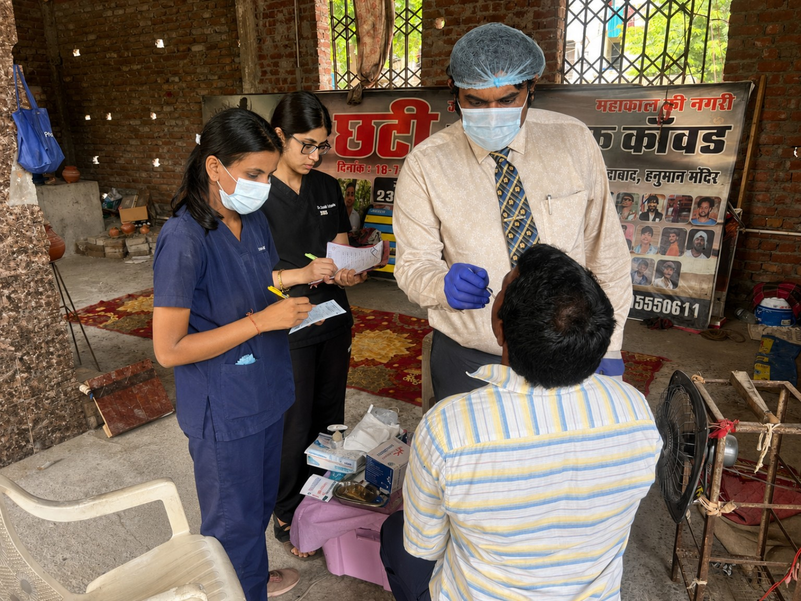
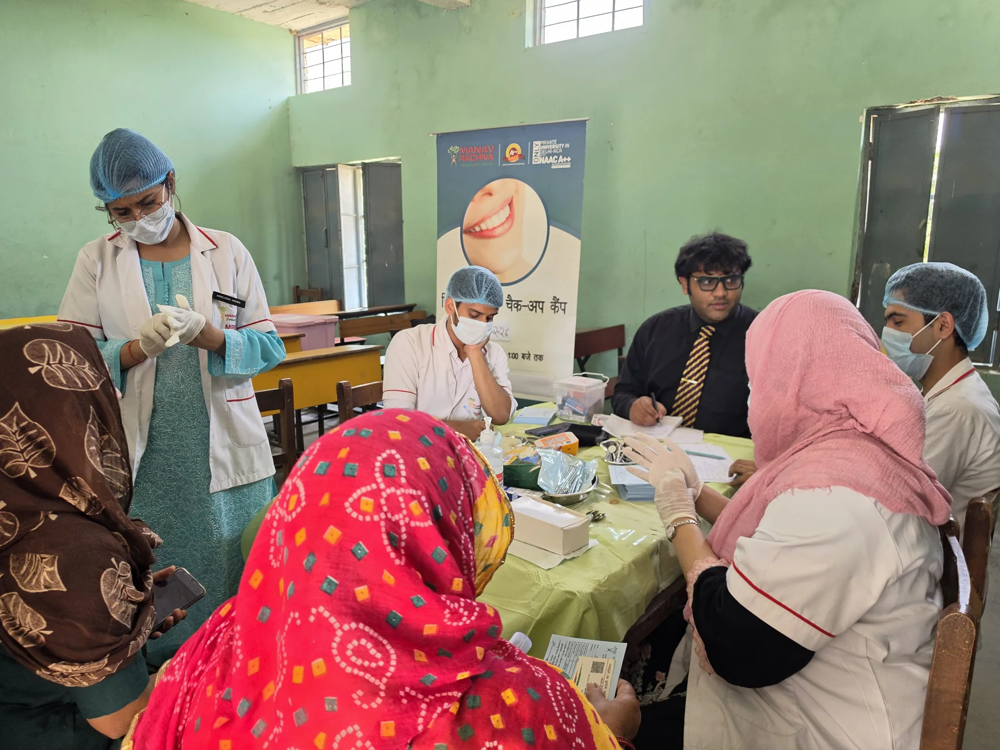
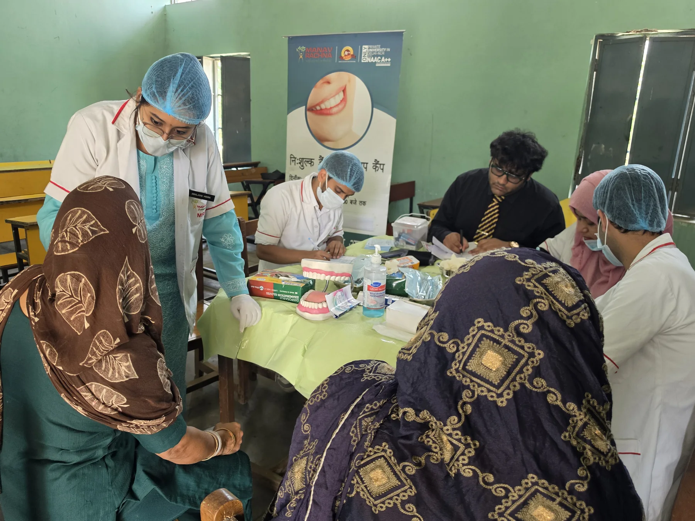

Public Health Dentistry
Teaching, mentoring and supporting regular community-facing programmes at Manav Rachna Dental College.
 OFFICIAL WEBSITE
OFFICIAL WEBSITE
CARE · TEACHING · COMMUNITY
Dr. Gandhi completed his Bachelor of Dental Surgery through Rajasthan University of Health Sciences and a rotating resident internship at Darshan Dental College and Hospital. He now combines general dental practice with academic work in Public Health Dentistry.
At Manav Rachna Dental College, his responsibilities span teaching, student mentorship, community outreach, institutional quality processes and patient-service coordination. Continued evening clinical practice keeps that work connected to the experience of individual patients.



Teaching, mentoring and supporting regular community-facing programmes at Manav Rachna Dental College.
Diagnosis and treatment across core areas of general dentistry at Muskan Dental Clinic, Delhi.
Experience supporting accreditation, risk assessment, patient-flow processes and grievance management.